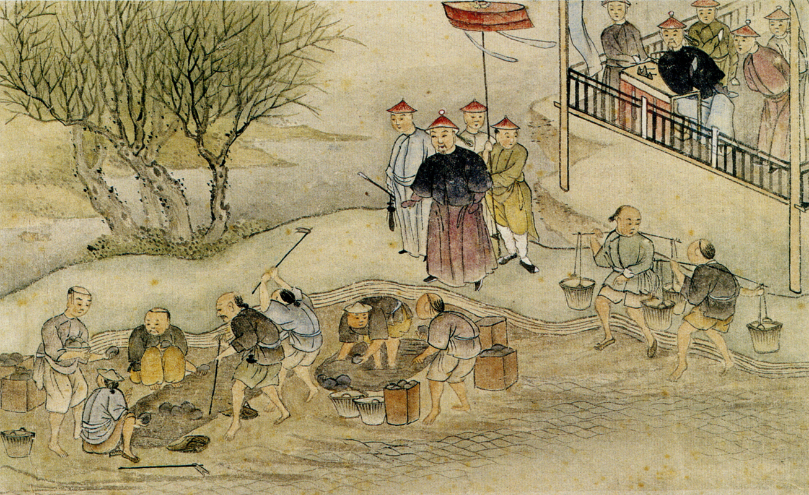
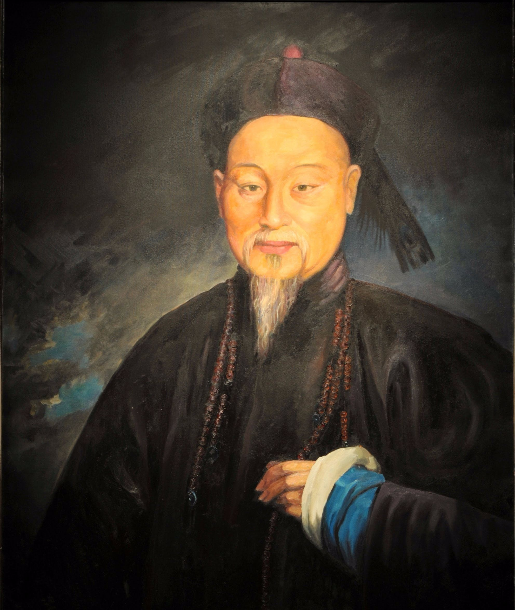
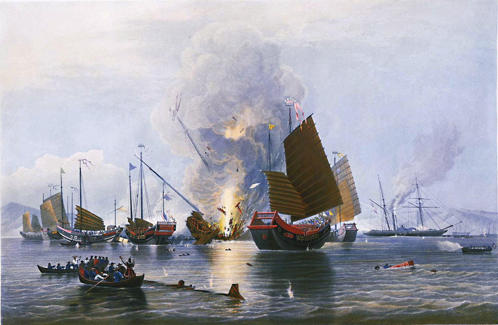
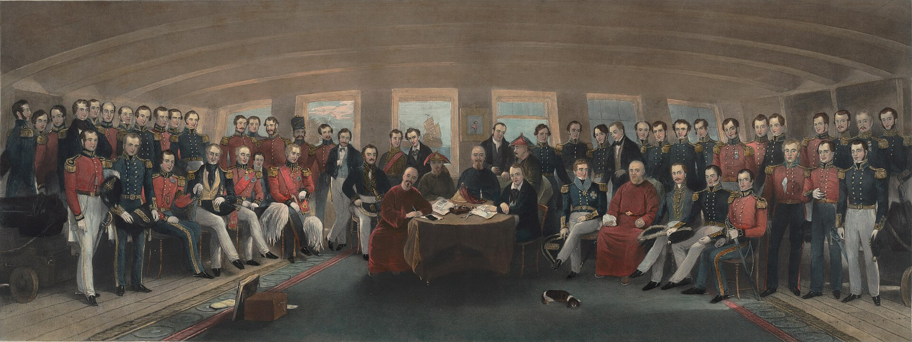
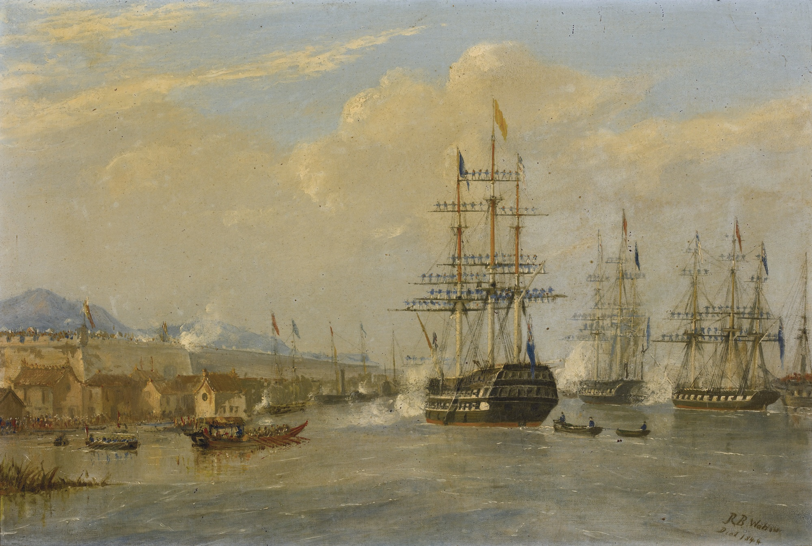

Pada 3 Juni 1839, di pantai Humen dekat Kanton, Komisaris Lin Zexu mengawasi 500 pekerja melarutkan ±20.000 peti candu milik Inggris ke dalam kolam air garam dan kapur, lalu membuangnya ke laut. Operasi itu berlangsung 23 hari. China baru saja memenangkan perang melawan narkoba — dan tepat karena itulah, tiga tahun kemudian, China dipaksa membayar ganti rugi untuk narkoba yang dimusnahkannya sendiri.

Masalahnya Bukan Moral. Masalahnya Perak.
Akhir abad ke-18, Inggris kecanduan teh China — plus sutera dan porselen. Masalahnya: China tidak mau barang Inggris. Wol dan kain katun Inggris tak laku di sana, jadi Inggris membayar semuanya dengan perak batangan. Aliran perak keluar menggerogoti kas negara. Inggris mengirim Kedubes Macartney pada 1793 untuk merundingkan syarat dagang — Kaisar Qianlong menolak mentah-mentah.
Solusinya ditemukan di seberang dunia: candu dari India. British East India Company memonopoli ladang poppy di Bengal dan Bihar, melelang candu olahan di Calcutta, lalu membiarkan pedagang swasta menyelundupkannya ke China lewat Pulau Lintin. Perusahaan itu sendiri "tidak pernah menyentuh" narkoba di tanah China — plausible deniability yang rapi secara hukum dan bangkrut secara moral.
Angkanya brutal: 1729 hanya ±200 peti candu masuk China per tahun. 1800: ±4.500 peti. 1838: ±40.000 peti per tahun — sekitar 2.800 ton. Arus perak berbalik total: yang dulu mengalir ke China kini mengalir keluar, ±15 juta dolar per tahun di pertengahan 1830-an. Jutaan orang China kecanduan — dari pejabat istana sampai tentara. Di bawah Sistem Kanton, seluruh dagang asing memang hanya boleh lewat satu pelabuhan (Kanton) dan satu perantara resmi (Cohong) — sistem yang dibenci Inggris, tetapi justru candu itulah yang membalik meja.
Lin Zexu: Pejabat Paling Jujur di Waktu yang Salah
Akhir 1838, Kaisar Daoguang mengangkat Lin Zexu (1785–1850) sebagai komisaris kekaisaran untuk memberantas candu. Lin tiba di Kanton Maret 1839 dan bergerak seperti badai: dalam hitungan bulan ia menangkap lebih dari 1.700 pengedar China dan menyita 70.000 pipa candu.
Kemudian ia mengepung kawasan dagang asing di Kanton — memutus pasokan, menarik pelayan China — dan menuntut: serahkan seluruh stok candu, tandatangani surat pernyataan tak akan berdagang candu lagi, atau hadapi hukuman mati menurut hukum China. Setelah enam minggu terkepung, Superintendent Dagang Inggris Charles Elliot menyerah: lebih dari 20.000 peti (±1,2 juta kg, senilai ±£2 juta) diserahkan.

Catatan redaksi: inilah twist yang jarang diceritakan. Lewat surat edaran 27 Maret 1839, Elliot "membeli" candu itu dari para pedagang dengan janji ganti rugi atas nama Mahkota Inggris. Dalam semalam, candu milik swasta berubah menjadi "properti pemerintah Inggris" yang diserahkan ke China. Sengketa dagang ilegal direkayasa menjadi sengketa antarnegara — bahan bakar perang yang sempurna.
Lin juga menulis surat terbuka kepada Ratu Victoria (1839), menuntut penghentian dagang candu dengan bahasa moral Konfusianisme. Surat itu tidak pernah sampai ke ratu — tetapi belakangan dimuat di London Times (1840) dan menghantui debat parlemen Inggris. Sebagai penghormatan atas kerjanya, 26 Juni kini diperingati dunia sebagai hari anti-narkoba internasional.
1839–1842: Meriam Melawan Jung
London tidak terima. Lobi pedagang candu membingkai penghancuran Humen sebagai "serangan terhadap properti dan kehormatan Inggris", dan pemerintah Palmerston mengirim ekspedisi militer. Yang datang bukan armada biasa: kapal uap besi Nemesis milik East India Company dan artileri modern menghadapi jung-jung kayu dan benteng meriam kuno Qing. Hasilnya serangkaian kekalahan telak.

Inggris merebut Kanton, Xiamen, dan Zhoushan, lalu bergerak ke utara: Shanghai jatuh, Zhenjiang jatuh setelah pertempuran berdarah dua hari, dan armada Inggris berlabuh mengancam Nanjing. Sementara itu, di istana, Lin Zexu — yang bertindak atas perintah kaisar dan berhasil total — dijadikan kambing hitam: dicopot tahun 1840 dan diasingkan ke Ili, Xinjiang, pada 1841. Ia baru direhabilitasi tahun 1845.
29 Agustus 1842: Traktat di Atas Kapal Perang
Perang berakhir di tempat yang simbolis: di atas kapal perang Inggris HMS Cornwallis, berlabuh di Sungai Yangtze lepas Nanjing. 29 Agustus 1842, Sir Henry Pottinger (Inggris) dan Qiying (Qing) menandatangani Traktat Nanking — traktat timpang (unequal treaty) pertama dari rangkaian panjang.

Isinya, ringkasnya:
1. Pulau Hong Kong diserahkan ke Inggris "untuk selamanya".
2. Lima pelabuhan dibuka untuk dagang Inggris — Kanton, Amoy (Xiamen), Fuzhou, Ningbo, dan Shanghai. Sistem Kanton dan monopoli Cohong dihapus.
3. Ganti rugi 21 juta dolar perak — termasuk ganti rugi untuk candu yang dimusnahkan Lin Zexu. Ya: China membayar narkoba yang dibuangnya sendiri.
4. Tarif bea cukai ditetapkan — China kehilangan hak mengatur tarifnya sendiri (sampai 1928).
5. Ekstrateritorialitas — warga Inggris di China tunduk pada hukum Inggris, bukan hukum China.
6. Klausul most-favoured-nation — keistimewaan apapun yang kelak China berikan ke negara lain otomatis berlaku untuk Inggris.
Dan inilah bagian paling absurdnya: kata "candu" tidak muncul sama sekali dalam Traktat Nanking. Perang yang dipicu narkoba diselesaikan tanpa membahas narkoba. Akibatnya bisa ditebak: impor candu ke China malah naik dua kali lipat menjadi ±60.000 peti pada 1860.
China memusnahkan narkoba — lalu dipaksa membayar ganti rugi untuk narkoba yang dimusnahkannya. Itulah "perdamaian" versi 1842.
Epilog: Perang Kedua & "Abad Penghinaan"
Cerita belum selesai. 1856–1860, Inggris (bersama Prancis) kembali berperang melawan Qing — Perang Candu Kedua, dipicu insiden kapal Arrow. Kali ini pasukan sekutu mencapai Beijing dan menjarah serta membakar Yuanmingyuan, Istana Musim Panas Lama, pada Oktober 1860. Hasilnya, Traktat Tianjin (1858) dan Konvensi Peking (1860): impor candu dilegalkan penuh, Kowloon diserahkan ke Inggris, dan diplomat asing boleh tinggal di Beijing.
Bagi China, Perang Candu Pertama adalah awal dari "Abad Penghinaan" (1839–1949) — satu abad dominasi asing yang menjadi luka kolektif terdalam negara China modern, dan fondasi cara Beijing membaca dunia hingga hari ini.

Analisis: Dibaca Pakai Lensa Ketahanan Nasional
1. Kedaulatan ekonomi = kedaulatan negara. China kalah bukan karena tentaranya pengecut, melainkan karena struktur ekonominya rapuh: defisit perak, ketergantungan pada satu komoditas adiktif impor, dan teknologi militer tertinggal satu generasi. Pelajaran buat Indonesia: negara yang tidak menguasai rantai pasok kritisnya — energi, pangan, teknologi — selalu bisa dipaksa lewat "perang dagang" versi modern.
2. Narkoba bisa menjadi senjata geopolitik. Inggris tidak menjual candu karena "pasar bebas" — ia menjualnya sebagai instrumen negara untuk membalik defisit dagang, lengkap dengan plausible deniability lewat pedagang swasta. Perang melawan narkoba bukan sekadar urusan kriminal, melainkan urusan ketahanan nasional — pemasoknya adalah jaringan transnasional yang terorganisir nyaris seperti negara.
3. "Perdagangan bebas" bisa jadi kedok pemaksaan. Retorika London: membuka pasar, free trade, peradaban. Realitas: meriam. Setiap kali ada kekuatan besar menuntut "akses pasar" dengan ancaman, ingat Kanton 1839 — yang dituntut bukan keadilan dagang, melainkan hak menjual racun.
4. Sistem yang menghukum orang jujurnya akan kehabisan orang berani. Lin Zexu bertindak atas perintah kaisar dan berhasil total — lalu diasingkan sebagai kambing hitam. Negara yang tidak melindungi pejabat jujurnya sedang menggali kuburnya sendiri.
Arsip & Referensi
Angka dan peristiwa di artikel ini diverifikasi silang dari sumber-sumber berikut:
- Wikipedia — "Lin Zexu", "Opium Wars" (linimasa & angka, diverifikasi silang).
- Encyclopedia.com — "Nanking, Treaty of" (29 Agustus 1842, HMS Cornwallis, isi traktat, impor candu 60.000 peti pada 1860).
- Penelope (UChicago) — "The Old China Trade", bab 11 (penandatanganan di Cornwallis; "nothing was said about the trade in opium").
- Hansard, Parlemen Inggris — debat 17 Maret 1842 (teks surat edaran Elliot, 27 Maret 1839).
- TheCollector.com — krisis dagang & Kedubes Macartney 1793.
- VictorianWeb / gwongzaukungfu.com — statistik peti candu & aliran perak.
- Iasnova.com — "Opium Wars Explained" (Abad Penghinaan 1839–1949; Perang Candu Kedua).
- Yuanmingyuan.eu — Perang Candu Kedua & pembakaran Yuanmingyuan 1860.
- Chiculture.org.hk / tulay.ph — penghancuran Humen 3–25 Juni 1839.
Kredit foto arsip: penghancuran candu Humen — seniman China abad ke-19 (via Wikimedia Commons), public domain; potret Lin Zexu — Lam Qua ±1839 (via Wikimedia Commons), public domain; Nemesis vs jung China — Edward Duncan 1843 (via Wikimedia Commons), public domain; penandatanganan Traktat Nanking — Capt. John Platt / John Burnet 1846 (via Wikimedia Commons), public domain; HMS Cornwallis di Nanjing — seniman abad ke-19 (via Wikimedia Commons), public domain.
Catatan redaksi: jumlah pecandu candu hanya tersedia sebagai rentang antar-sumber ("jutaan"); kami tidak memakai angka pasti. Rincian ganti rugi 21 juta dolar (porsi untuk candu: 5–6 juta) bervariasi antar-sumber; total 21 juta yang kami pakai. Klaim soal kimiawan EIC yang "memperkuat" candu dan kutipan Marx tidak lolos verifikasi silang — tidak dipakai.
Negara yang kalah perang karena "berhasil" memberantas narkoba. Versi ringkasnya ada di Instagram & TikTok @jejakkuasa — follow biar nggak ketinggalan sejarah berikutnya.